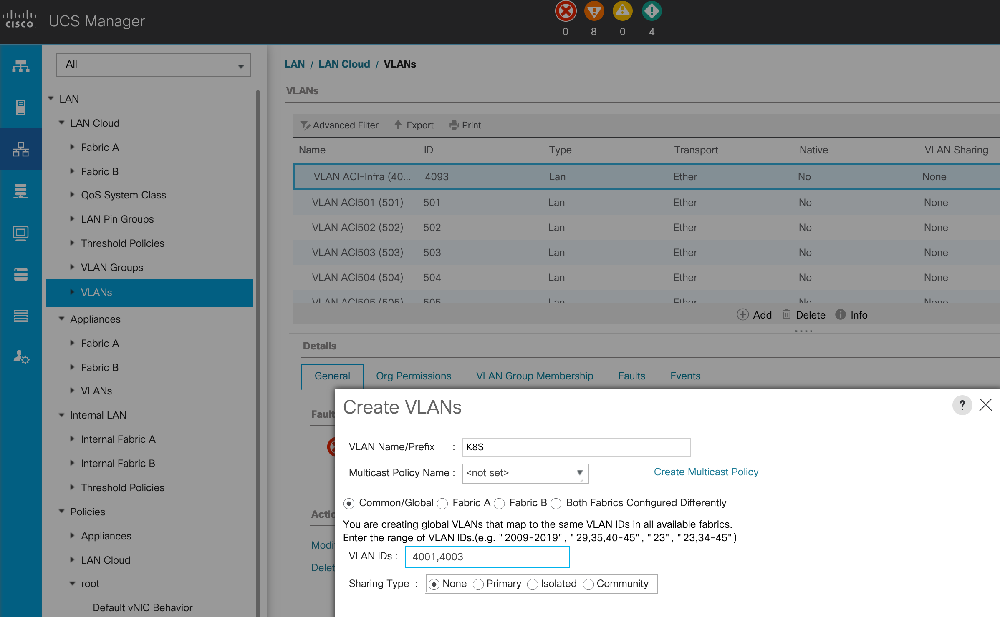

集成前准备
Prerequisite before Integration
K8s支持运行与BareMetal服务器和VM on Hypervisor，在本演示中，采用K8s on VM的部署方式。
K8s网络地址规划
NTP: 10.66.141.50, 10.66.141.51
DNS: 64.104.123.245
Node OOB IP:
Master: 10.75.53.81
Worker1: 10.75.53.82
Worker2: 10.75.53.83
kubeapi_vlan: 4001 (用于node的physical domain)
service_vlan: 4003 （用于service的loadbalancer）
Infra_vlan: 4093
node_subnet: 172.16.0.1/24
pod_subnet: 172.16.1.1/24
extern_dynamic: 172.16.2.1/24
extern_static: 172.16.3.1/24
node_svc_subnet: 172.16.4.1/24
cluster_svc_subnet: 172.16.5.1/24
mcast_fabric: 225.1.1.1
mcast_range:
start: 225.100.1.1
end: 225.100.1.255
ACI 环境准备
ACI prerequisite
1. ACI VMM配置，ACI应该正常和VCenter进行集成，可以正常通过ACI进行VM网络的部署。
2. 可以正常访问Internet的Common L3out
在本演示中，通过common VRF中的L3out实现对Internet的访问，完成K8s的安装
3. HX FI uplink添加相关VLAN
创建kubeapi_vlan, service_vlan 
在vm-networK-a vNIC template中添加这两个VLAN
4. SNAT to ACI
在L3out router上，配置SNAT用于访问K8s external service